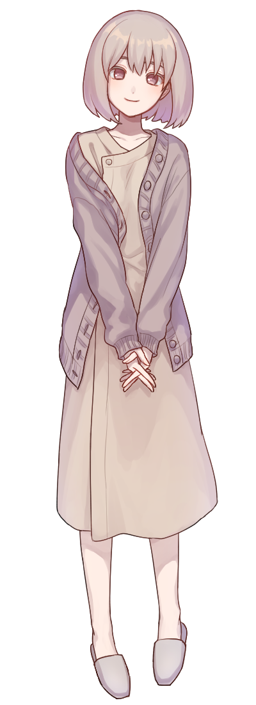

自然体のもてなし
初めて出会う相手にも自然に話しかけ、お茶を囲んで会話する時間を楽しむ。
謎の住人
つきもり みお Tsukimori Mio
「なくしたものって、本当に消えるのかな。」
過去よりも、今目の前にある時間を愛する少女。

穏やかでおっとりした性格の、不思議な少女。
誰に対しても優しく、初めて出会った相手にも自然に接するが、その独特な価値観やマイペースな言動で周囲を困惑させることも。
普段は一人で気ままに暮らしており、時折訪れる人々をお客さんとして迎え、お茶を飲みながら会話を楽しんでいる。
なかでも明人には強い母性を感じているようで、本人が嫌がってもお構いなしに甘やかしてしまう。
自身の過去については多くを覚えていないが、本人は特に気にしていない様子。
今この瞬間と、人との出会いを何より大切にしている。
初めて出会う相手にも自然に話しかけ、お茶を囲んで会話する時間を楽しむ。
自分の過去にこだわるより、今目の前にいる相手との時間を大切にする。
明人に対しては特に世話を焼きたがり、本人が照れて拒んでも甘やかすことをやめない。
明人を放っておけないようで、本人が抵抗してもお構いなしに世話を焼く。澪にとってはごく自然な親しみの表現だが、明人はその距離感に戸惑ってしまう。